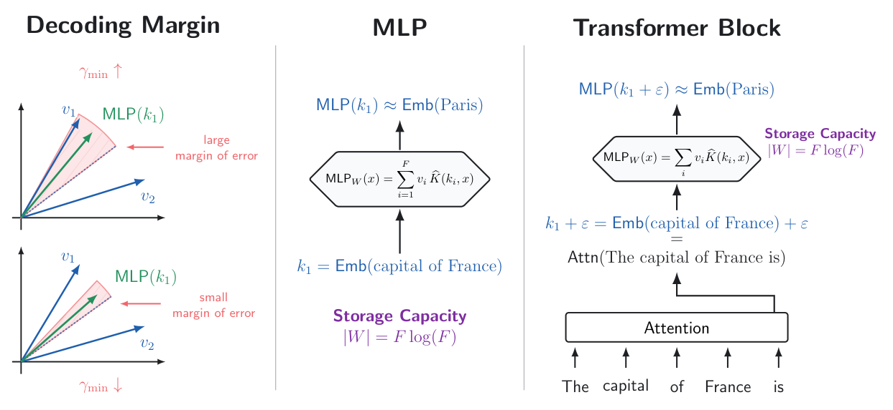
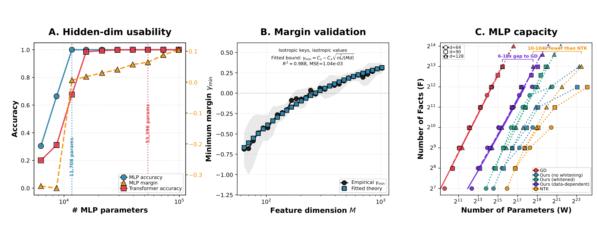
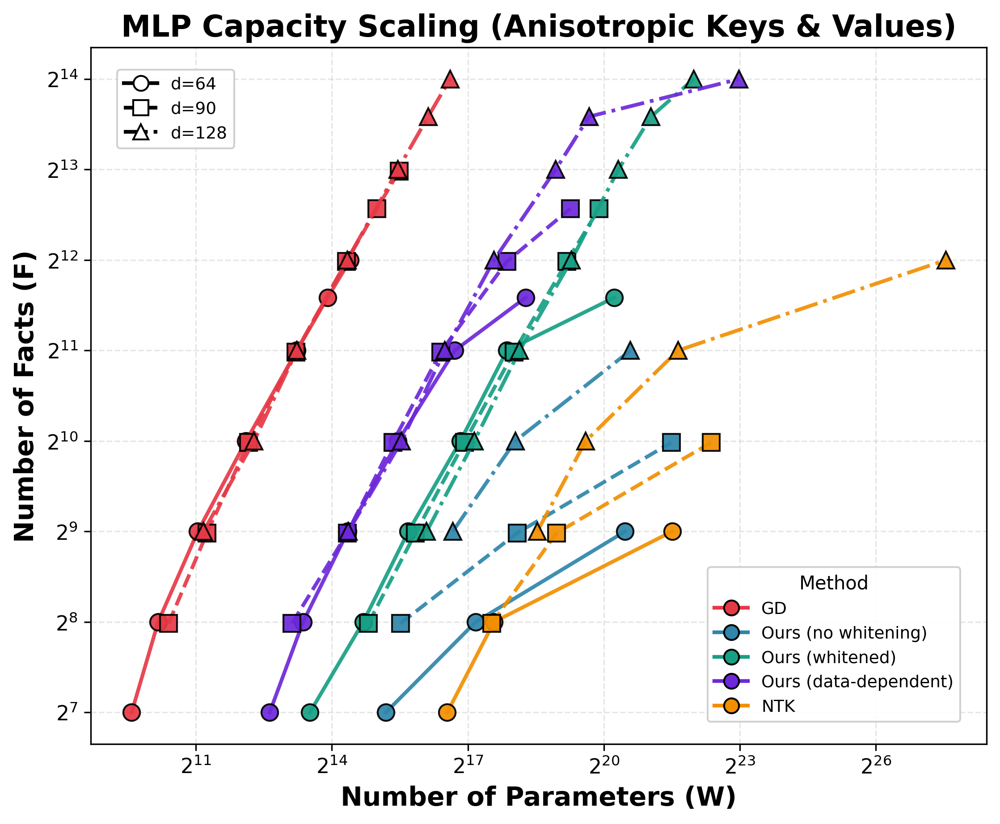
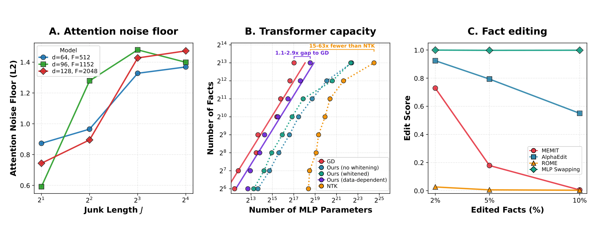
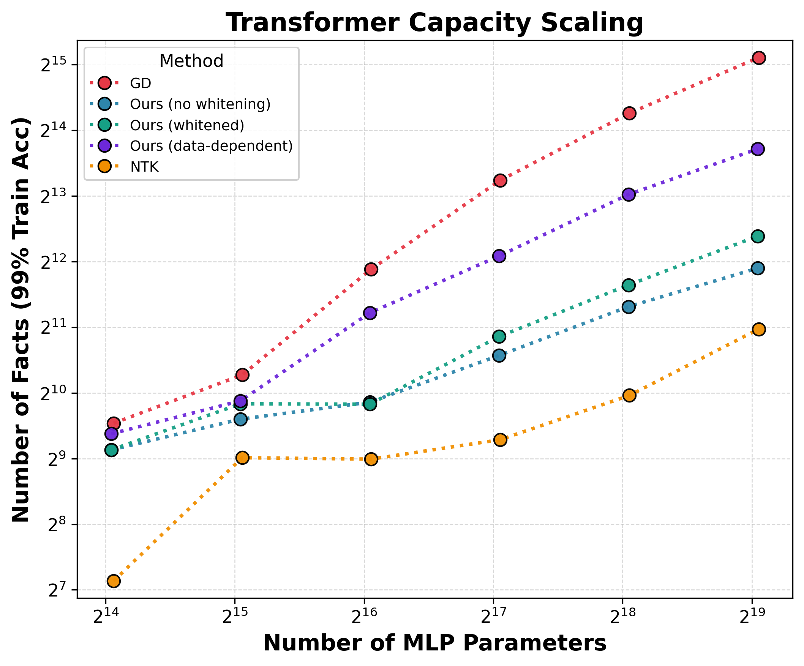
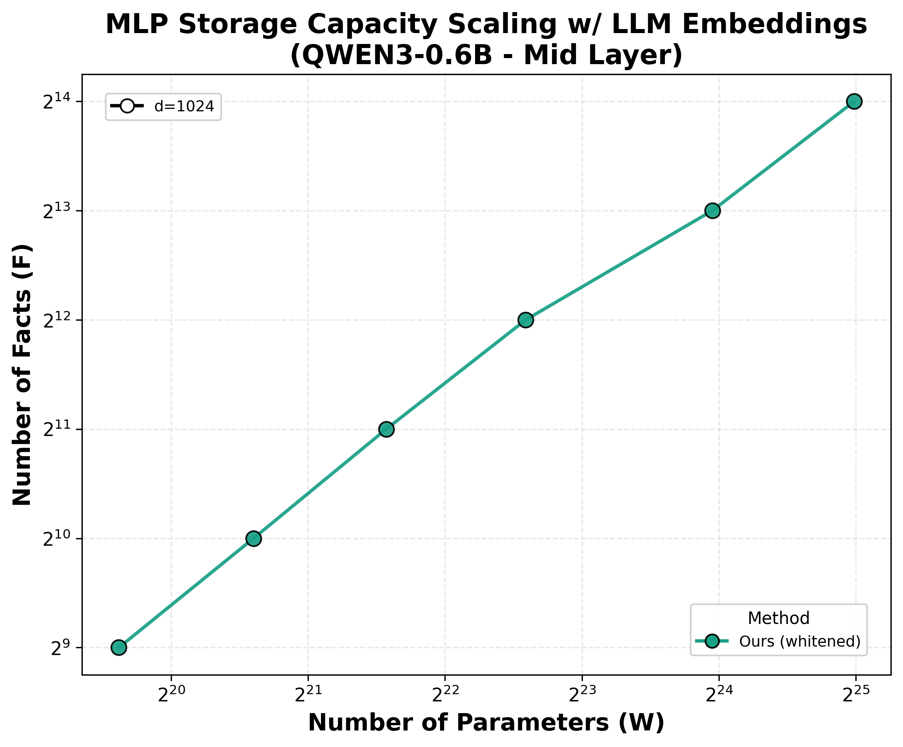
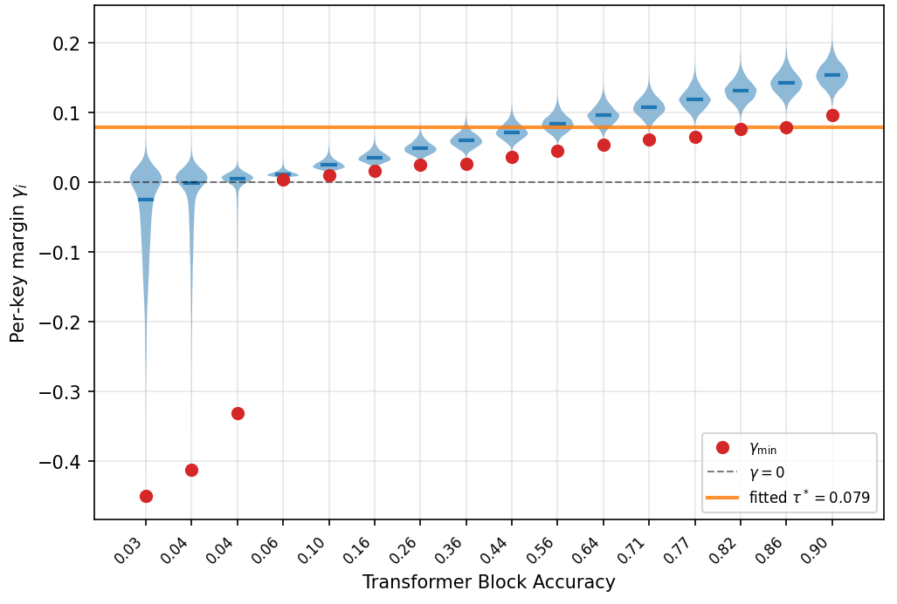
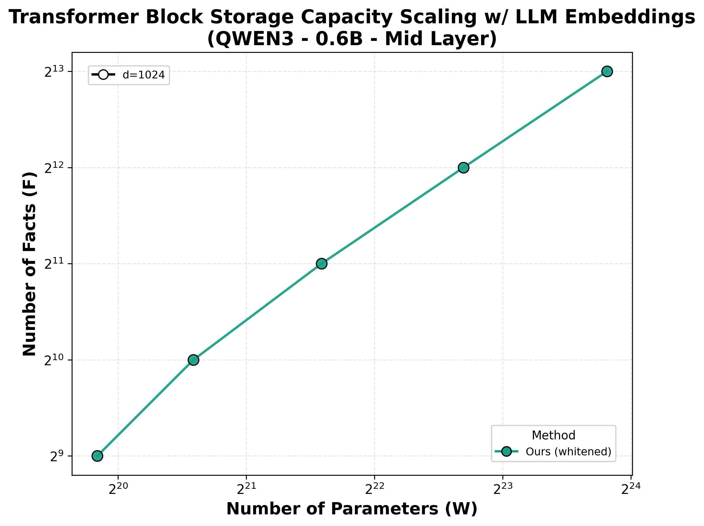

Transformer中的MLP层一直被认为是「黑盒」：它们存储了海量知识，但没人真正知道存储机制是什么。斯坦福Hazy Research团队的最新论文发现了一个惊人的事实：MLP本质上是一种Hebbian记忆，可以用一个简单的闭式公式直接构造，完全不依赖梯度下降训练。
这意味着我们可以瞬间将知识注入Transformer块：给定一组键值对（如「法国的首都是巴黎」），通过一个随机矩阵加门控机制，就能构建一个精确存储这些事实的MLP，而且参数数量接近信息论的理论下限。
Hebbian学习规则的核心是「一起放电的神经元，连接会增强」。论文发现，MLP的激活模式天然符合Hebbian机制：输入通过随机投影映射到高维空间，与键嵌入的匹配程度决定哪些神经元被激活，从而实现事实的存储与检索。
这一发现的关键意义在于：MLP不需要梯度下降就能「记住」事实。 只要给定键嵌入（key embedding）和值嵌入（value embedding），通过一个简单的数学构造就能精确存储这些事实，参数效率接近信息论极限。
具体来说，一个事实集定义为从键到值的映射：键嵌入K = {k₁, ..., k_F}，值嵌入V = {v₁, ..., v_F}，以及映射f: [F] → [F]。例如，在「首都」事实集中，键嵌入「France」映射到值嵌入「Paris」。MLP存储该事实集意味着：当查询键k_i时，输出与正确值v_f(i) 的点积最大。

构造方法出人意料地简单。给定键k_i和值v_f(i)，从高斯分布中采样两个随机矩阵A, G ∈ R^(m×d)，构建门控MLP（Gated MLP）：
MLP(x) = A^T · (Gx > 0的激活) · V
是的，整个构造就这么简单：没有梯度下降，没有反向传播，没有迭代优化。第一个矩阵G将输入随机投影到高维空间，门控激活函数选择与输入匹配的神经元，第二个矩阵A收集这些激活来产生正确的值输出。
作者在论文中给出了完整的数学证明：当键嵌入各向同性时（如均匀球面分布），该构造能以信息论最优速率 Θ(F log F) 参数精确存储F个事实。对于非各向同性嵌入（如LLM的实际嵌入），容量按相同速率缩放，但需乘以嵌入几何结构决定的惩罚因子。

论文的核心理论贡献是证明了所构造的MLP的存储容量。在键和值嵌入各向同性的条件下，MLP用W个参数可以精确存储F个事实，达到信息论最优速率W = Θ(F log F)。
这意味着参数数量仅随事实数量线性增长（乘以对数因子），与理论极限一致。相比之下，先前基于神经正切核（NTK）的构造方法在同一任务上需要多10-104倍的参数。而梯度下降训练的MLP虽然表现更好，但本文构造方法已将其差距缩小到3-10倍以内。
论文还提供了两种增强变体：白化变体（whitened variant）使用协方差白化核来适应嵌入分布；数据依赖变体（data-dependent variant）通过求解最小二乘问题来优化存储。数据依赖变体在Transformer场景中表现尤为出色。

在独立MLP中存储事实是一回事，在Transformer块内使用是另一回事。当MLP位于Transformer块中时，注意力层传递给它的不是精确的键嵌入k_i，而是带有噪声的版本q = k_i + ε。
论文证明，只要注意力噪声（即查询向量与精确键嵌入的L2误差）低于 √(d/(F log F))，Transformer块就能正确召回事实。 在此条件下，整个块继承了MLP的信息论最优缩放特性。
实验验证显示，数据依赖变体在Transformer场景中表现最佳：在固定模型维度下随事实数量增长，该构造保持在梯度下降训练MLP的3× 以内，比先前构造方法好63×。 这是首个证明Transformer块能以信息论最优速率存储事实的MLP构造方法。


论文不仅给出了理论分析，还使用 Qwen3-0.6B的真实LLM嵌入进行了实验验证。结果表明，即使使用真实LLM的非各向同性嵌入，构造的MLP仍然能高效存储事实。
MLP容量实验：使用Qwen3-0.6B第14层的嵌入，构造的MLP在事实存储任务上接近梯度下降训练的性能，白化变体进一步提升了容量。
Transformer块实验：将构造的MLP嵌入到Transformer块中，在真实LLM嵌入上测试事实召回能力，构造方法仍然保持竞争力。
边际分析：论文通过边际分布分析揭示了构造方法的成功原因：Hebbian核函数在正确的键上产生较大的核值，在不匹配的键上产生较小的核值，从而实现了精确的键值检索。



论文打开了多个有意义的研究方向：
理解预训练LLM的事实存储机制：能否用本文的理论框架理解预训练语言模型中的MLP？能否直接提取或编辑存储在这些MLP中的知识？
序列混合器与多层Transformer的记忆：能否将理论扩展到注意力KV缓存等序列混合器的参数化事实存储？注意力和MLP层如何协作在多层的模型中存储知识？
这些问题的答案可能不仅会改变我们对Transformer的理解，还可能催生新一代的高效模型编辑和知识注入技术。
参考：https://arxiv.org/abs/2607.10034